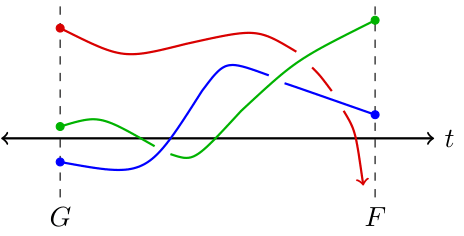
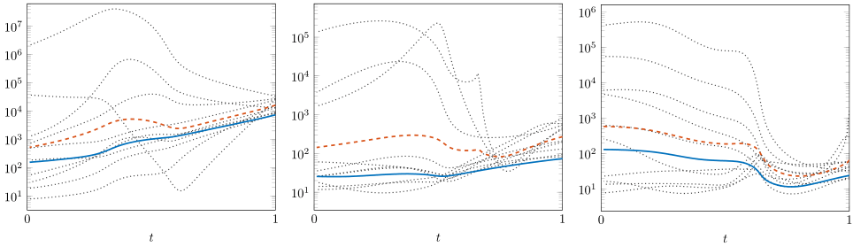
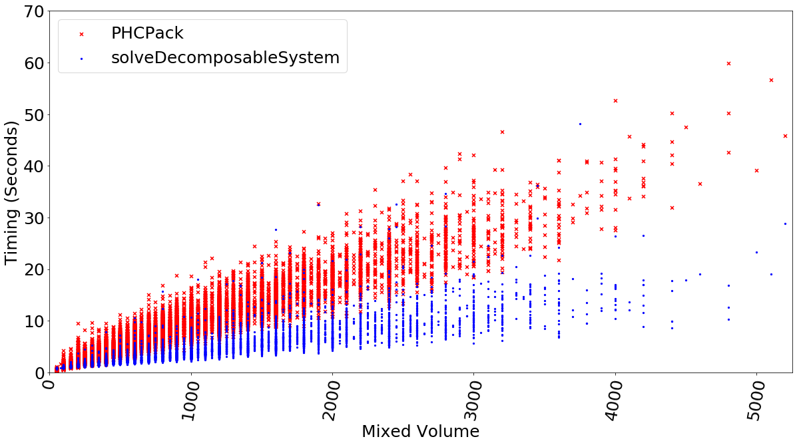

Profile
Overview
I'm a Van Vleck Visiting Assistant Professor at University of Wisconsin - Madison with expertise in applied and computational algebraic geometry and their applications to machine learning and statistics. I have a passion for excellence in meeting my team's goals by developing creative and original solutions to problems, and effectively communicating those solutions.
Education
- Texas A&M University, Ph.D. Mathematics, GPA=3.89, Completed: 2023
- Indiana University - Purdue University - Indianapolis, B.S. (Honors) Mathematics, Minor Computer Science, GPA=3.68, Completed: 2017
Organizational Work
Research
Overview
My research focus lies in numerical and computational algebraic geometry and their applications to areas such as to machine learning and statistics. More specifically, some of my mathematical interests include, in no particular order:
- Numerical Homotopy Methods
- Algebraic Statistics
- Numerical Certification Methods
- Algebraic Optimization
- Galois Theory in Enumerative Geometry
- Real Algebraic Geometry
Much of my research is accompanied by technical open-source software which is freely available to use and is hosted on my Github and/or official sources as provided in Publications and Software below. These software implementations vary widely in the scope of their audience and application, from black-box solvers for general polynomial systems to more technical software for the purpose of research experimentation and proof. See Projects below for details on selected examples.
Publications and Software
Preprints (reverse-chronological):
- "Galois Groups of Purely Lacunary Polynomial Systems", Yahl, Thomas. In preparation.
- "Activation Degree Thresholds and Expresiveness of Polynomial Neural Networks", Finkel, Bella; Rodriguez, Jose Israel; Yahl, Thomas; Wu, Chenxi, arXiv:2408.04569. Submitted.
- "Galois Groups in Enumerative Geometry and Applications", Sottile, Frank; Yahl, Thomas, arXiv:2108.07905. Submitted.
Publications and Software (reverse-chronological):
- "Completions to Discrete Probability Distributions in Log-Linear Models", Cai, May; Oleson Recke, Cecilie; Yahl, Thomas, Algebraic Statistics 15 (2024), no. 2, 225-247.
- "Computing Galois Groups of Finite Fano Problems", Yahl, Thomas, Journal of Symbolic Computation 119 (2023), 81-89.
- "Real Solutions to Systems of Polynomial Equations in Macaulay2", Lopez Garcia, Jordy; Maluccio, Kelly; Sottile, Frank; Yahl, Thomas, Journal of Software for Algebra and Geometry Vol. 14 (2024), 87-95.
- "Polyhedral Homotopies in Cox Coordinates", Duff, Tim; Telen, Simon; Walker, Elise; Yahl, Thomas, Journal of Algebra and its Applications Vol. 23, No. 04, 2450073 (2024).
- "Decomposable Sparse Polynomial Systems",Brysiewicz, Taylor; Rodriguez, Jose Israel; Sottile, Frank; Yahl, Thomas, Journal of Software for Algebra and Geometry Vol. 11 (2021), 53-59.
- "Solving Decomposable Sparse Systems",Brysiewicz, Taylor; Rodriguez, Jose Israel; Sottile, Frank; Yahl, Thomas, Numerical Algorithms 88 (2021), 453-474.
Selected Conference/Seminar Talks
- "Activation Thresholds and Expressiveness of Polynomial Neural Networks" (Slides), JMM 2025.
- "Galois Groups of Purely Lacunary Polynomial Systems" (Slides), Banff International Research Station Workshop: Computational Geometry.
- "The Unbalanced Procrusted Problem and Algebraic Optimization" (Slides), University of Wisconsin - Madison Applied Algebra Seminar.
- "Computing Galois Groups of Fano Problems" (Slides), Joint Mathematics Meetings 2023.
- "Solving Decomposable Sparse Polynomial Systems" (Slides), Georgia Tech Algebra Seminar.
- "Parameter Homotopies in Cox Coordinates" (Slides), Joint Mathematics Meetings 2021.
Teaching
Overview
My teaching philosophy is that students prosper in an environment that allows them to confidently learn and apply mathematics, without fear of failure or ridicule. In my various roles as mathematics tutor, TA, and instructor, I've taught a wide range of topics from lower-level undergraduate courses through graduate level topics courses. In each of these settings, I've found success by actively engaging with students and allowing them to explore and understand the material in their own way. Several past students have voiced their appreciation for my style of teaching through course evaluations and by reaching out personally. Classroom evaluations from students are available on request from appropriate parties, below are selected comments from these evaluations:
- Open Comment 1
"Having a class with Professor Yahl has truly been an honor. He is a phenomenal professor and a very genuine person. Not only does he show up to class eager to teach the content with a smile on his face, but he does so in a way that makes attending class something that I look forward to each day. He is easy to talk to, and is willing to help anyone out if they have any questions about the content. He is one of, if not THE, best professor I have ever had, and he has inspired me to continue pursuing an education in mathematics. Thank you for a great semester!" - Math 320 Student at UW-Madison
- Open Comment 2
"He was very calm and the way he taught the material was very refreshing. Compared to other math professors I have had at UW Madison, Thomas has by far been the best professor I have had. He was very knowledgeable of all of the material, and always responded to questions with a thoughtful answer that cleared up any confusion. I also went to his office hours many times, and he could always explain concepts to me very well and could see where I went wrong. He is very nice and cares about his students a substantial amount." - Math 213 Student at UW-Madison
- Open Comment 3
"Professor Yahl taught this class very thoroughly and communicated complicated concepts at a level which was very considerate of his students. He allocated appropriate amounts of time for the more complex ideas in the course while also ensuring that students understood the basics and groundwork necessary for success in the class. I would gladly take his class again." - Math 213 Student at UW-Madison
As a direct result of my approach to teaching, I've been awarded the Postdoctoral Excellence in Teaching Award from the Department of Mathematics at University of Wisconsin - Madison and the Outstanding TA Award from Texas A&M University.
University of Wisconsin - Madison Teaching Duties
- Spring 2025, Math 863:001 "Topics in Algebraic Geometry: Toric Varieties"
- Fall 2024, Math 551:002 "Elementary Topology"
- Fall 2024, Math 213:001 "Calculus and Introduction to Differential Equations"
- Spring 2024, Math 213:001 "Calculus and Introduction to Differential Equations"
- Fall 2023, Math 320:002-003 "Linear Algebra and Differential Equations"
Texas A&M University Teaching Duties
- Summer 2022, "Algebra Qualifying Exam Prep Course"
- Fall 2021, Math 168 "Finite Mathematics"
- Summer 2021, "Algebra Qualifying Exam Prep Course"
- Summer 2020, Math 142 "Business Calculus"
Texas A&M University Teaching Assistant Duties
- Spring 2021, Math 152 "Calculus II for Engineering"
- Fall 2020, Math 151 "Calculus I for Engineering"
- Fall 2019, Math 148 "Calculus II for Chemistry and Biological Sciences"
- Spring 2019, Math 152 "Calculus II for Engineering"
- Fall 2018, Math 148 "Calculus II for Chemistry and Biological Sciences"
Selected Projects
Real Geometry in Macaulay2
This project led to the development of the RealRoots.m2 Macaulay2 package. This package implements several symbolic methods from real algebraic geometry including:
- Variational methods for enumerating the number of real solutions to a system of polynomial equations, such as the Budan-Fourier Theorem, Sturm's Theorem, and Sylvester's Theorem.
- Ideal theoretic methods for enumerating the number of real solutions to a system of polynomial equations via regular representations and the trace form.
- Isolation methods for estimating the real zeros of a univariate polynomial via a bisection algorithm.
This work also resulted in an improved statement and proof of Sylvester's theorem, which allows one to compute information about the real zeros of a polynomial system more accurately. The article "Real Solutions to Systems of Polynomial Equations in Macaulay2" provides a complete description of the implemented methods and mathematical content.
We illustrate the utility of this package via an example. It is well known that a smooth cubic surface in complex projective 3-space contains 27 distinct lines, that lie entirely on the surface. However, a smooth cubic surfaces in real projective 3-space can contain only 3, 7, 15, or 27 lines. By describing these lines as solutions of a polynomial system, the RealRoots.m2 package can be used to determine this number of lines for a given cubic surface.
The illustration below is of the cubic surface defined by the equation
58313/630 x3 + 13351/1260 x2y - 2645/84 xy2 + 1997/180 y3 + 1869/20 x2z + 769/105 xyz - 323/90 y2z - 27/20 xz2 - 4751/90 yz2 + 12053/630 z3 + 1073/120 x2 - 883/120 xy - 977/252 y2 - 8737/504 xz + 2171/360 yz + 541/8 z2 + 1079/210 x - 30977/1260 y - 36767/630 z - 6953/1260 = 0.
At a glance, it is unclear how many lies lie on this cubic surface. Using RealRoots.m2, it can be proven that the cubic surface below contains the maximum number, 27 lines. These lines are illustrated on the surface below in red. Please click on the figure below for an interactive view of the surface and all 27 lines.
Cox Homotopies in julia
The julia software package CoxHomotopies.jl implements numerical homotopy algorithms described in the research article "Polyhedral Homotopies in Cox Coordinates". We briefly describe numerical homotopy algorithms in general, and the methods contained in this software package.
A numerical homotopy algorithm utilizes a start system whose solutions are known or easier to compute to compute solutions of other systems. To compute solutions of a given target system, F, a homotopy is constructed, which can be considered as a path between the start system G and the target system F. A numerical homotopy algorithm tracks the solutions of the start system along the homotopy, to obtain solutions of the target system. In the illustration below, the start system G has 3 solutions that get tracked to 2 solutions of the system F.

Figure 2: An illustration of a homotopy between a start system G and a target system F.
Note that in the illustration above, the red curve seems to diverge--it does not provide a solution to the target system F. Alternatively, the red curve could end at a solution of the target system F which is very large in magnitude. In either case, accurately tracking along the red path is computationally expensive and potentially leads to inaccurate or unnecessary information.
The main method of CoxHomotopies.jl provides a numerical homotopy algorithm for solving polynomial systems. Loosely, this algorithm ensures no paths diverge as in the illustration above. This is achieved through a toric compactification of the solution space--solutions are tracked in a quasi-affine space which provides coordinates for the toric compactification via the Cox quotient construction of a complete normal toric variety.

Figure 3: The graphs above illustrate the condition number of the Jacobian matrix during the tracking of 3 solutions in a particular numerical experiment. In each graph, the dotted lines represent a random choice of hyperparameters, the dashed red line represents the average condition number for these random choices, and the blue line represents the achieved condition number through the use of the Cox homotopy algorithm.
This algorithm has the additional benefit that extra hyperparameters are introduced during tracking. Numerical experiments detailed in "Polyhedral Homotopies in Cox Coordinates" illustrate that these parameters may be chosen in a consistent way as to decrease the condition number of the Jacobian of the system while tracking. This is expressed by the figures above.
Solving Decomposable Systems in Macaulay2
The Macaulay2 package DecomposableSparseSystems.m2 implements methods of decomposing sparse polynomial systems into simpler systems. The article "Decomposable Sparse Polynomial Systems" details the methods contained in this package, and the Journal of Software for Algebra and Geometry has peer-reviewed the code and documentation in addition to this article.
Whether or not a sparse polynomial system decomposes can be determined by its Galois group, as described in the research article "Solving Decomposable Sparse Systems". While the Galois group may be difficult to determine, theoretical tools for understanding the Galois group provide a classification of those systems which decompose. Those sparse polynomial systems that decompose are those lacunary systems and triangular systems.
- A lacunary system generalizes equations such as x6 + 3x3 + 2 = 0, which may be considered equations in a new variable. If y = x3, we may write this equation as the system y2 + 3y + 2 = 0, x2 - y = 0.
- A triangular system generalizes triangular linear systems of equations such as 2x + y = 3, 3y = 6, in which a subset of the variables can be solved for independently of the others.
The main method of DecomposableSparseSystems.m2 iteratively decomposes systems until no further decomposition is possible. This is provided as overhead for a black-box solver, which solves the resulting decomposed systems, and the method recombines solutions into solutions of the original system. The figure below shows the results of a computational experiment comparing the timing of using the black-box solver PHCPack agains the main method of DecomposableSparseSystems.m2, in the precense of decomposable systems.

Figure 4: The timings of PHCPack and DecomposableSparseSystems.m2 in solving over 10,000 instances of decomposable sparse polynomial systems with up to 5,000 solutions.